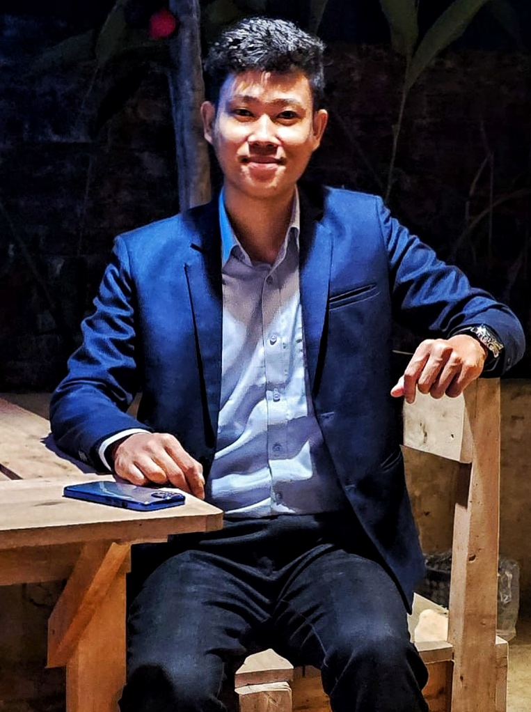

I work at the intersection of explainable AI, vision-language models, large language models, and AI agents, with a focus on problems where the model's decision must be both accurate and interpretable. My recent work spans medical imaging, vision-language models, network security, and multimodal federated learning.
This page documents my research, projects, and academic record.

>I'm an applied AI researcher working on explainable AI, vision-language models, large language models, and multimodal learning. My focus is making these systems trustworthy enough to use in healthcare and other high-stakes settings. I grew up in Rangamati, in the Chittagong Hill Tracts, where specialist medical care is hard to reach. That shaped why I care about AI people can actually trust, not just AI that scores well on a benchmark.
My work covers medical analysis and disease prediction that helps doctors and clinicians make better decisions, federated learning for privacy-preserving healthcare AI, network intrusion detection, and retrieval-augmented generation. The question behind all of it is the same. How do I make a model accurate enough to be useful and interpretable enough to be trusted? I build both research prototypes and deployed tools, and the code goes up on GitHub.
I'm looking for graduate opportunities in Computer Science, with a focus on Trustworthy and Interpretable AI, Vision-Language Models, Large Language Models, and Multimodal AI. I welcome questions from potential supervisors and collaborators.
Mentor. My current mentor and principal investigator is Md Kishor Morol, a PhD student at Cornell University and a Researcher at Meta FAIR, who also founded ELITE Research Lab. He supervised my work on multimodal and federated learning. He now advises me on vision-language models, their applications, and AI safety, and on formal privacy guarantees. He is a co-author on the Frontiers in Digital Health review and oversees the two interns I supervise.
During my undergraduate degree, my thesis supervisor Md Mynoddin guided the intrusion-detection work that became my B.Sc. thesis, and Dr. Tanjim Mahmud supported my research as a co-author on the Bangla license plate paper.